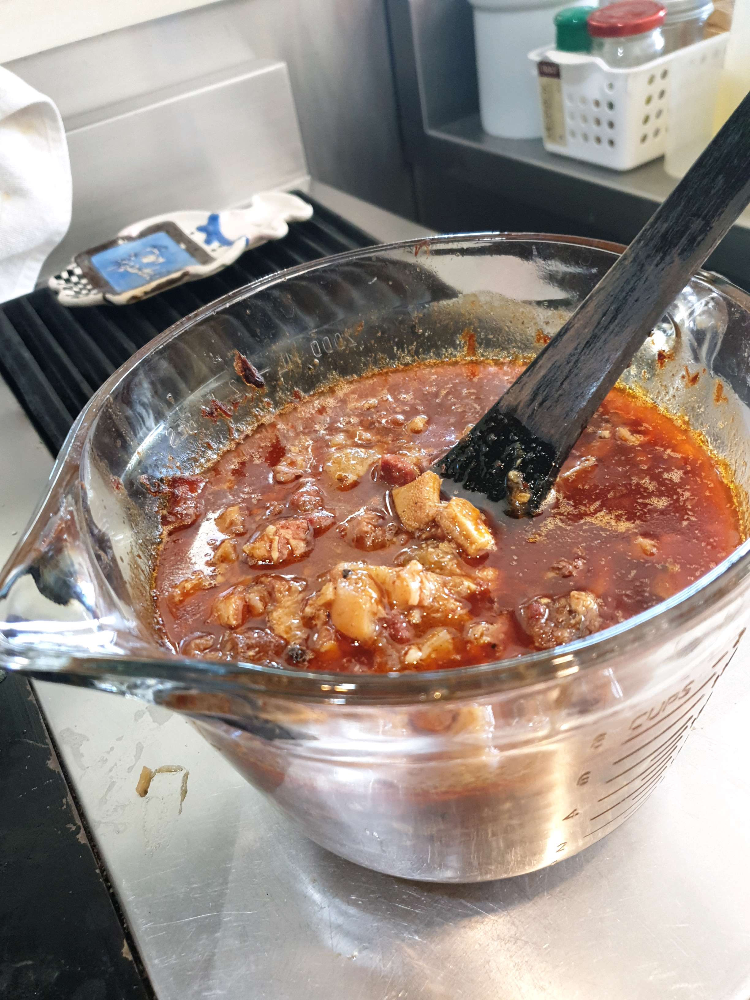

Main Page
Callos Ko Recipe

Time-tested family recipe for those special occasions
Callos is a stew which is common across Spain. It is a traditional dish in Madrid where they call it callos a la madrileña.
The main ingredients are beef tripe, chickpeas, and chorizo. You can be flexible for this recipe.
Our family usually cooks this during the holidays and fills you with so much joy. Perfect for those cold winter days too!
Recipe
Servings: 8-10 persons
Ingredients for Stock
- Bay leaf + Black peppercorns
- A little vinegar? Or Lemon? To help break collagen?
- 2 Kg Beef Cheeks, Beef Face, Tongue
- 1 Kg Ox Tripe
- 1 Kg Ox Tendon
- 1 Pc Calf foot
- 1 Pc Smoked Pork feet, or plain pork rind
Part 1:Instructions for Stock
- Gather all Ingredients
- Add water to submerge meats at least 2inches, it will reduce. Put in beef cuts first, add pork cuts 1 hour later. Throw stock after first 40mins, reboil.
- After Boiling 2 Hours, cut meats into smaller pieces, remove bones and yucky parts.
- Strain stock and reserve for use in sauté. You may stop here and resume cooking another day.
Ingredients for Sauté: (divide equally into 2 pots)
- 4 Large white onions
- 5 Heads Garlic
- 2 x 425gm can Garbanzos
- At least 4 Tbsp Paprika (be generous)
- At least 2 Tbsp Black Pepper
- 8 Pcs imported Bay Leaf
- 500 Gms Hamon or Picnic Bacon (cubed)
- 4 Pcs or more Chorizo (Prefer Terry's store bought) or mix w/ Morcilla
- Cut-up Boiled Meats
- 1 Litre White Wine
- Olive oil as needed
- 4 Pcs Beef Bouillon OR Soup Stock
- Drops of "Smoke Flavor" liquid
Part 2: Sauté and Finish
- Sauté vegis first and add sausages and spices when vegis are soft.
- When sausages start to sweat, add wine and stock enough to fill pot to 2/3 full.
- Add boiled meat pieces and bring to boil.
- Finish stew in 325°F oven to avoid burning bottom. Or at stove top at low simmer for another 2 or 3 hours to blend flavors and reduce/thicken stew.
To Serve
- Reheat ar 320F, 20Mins.
- Serve on a plate or bowl with a wide base to soak up the sauce.
- Place Callos on top/side of steaming Rice. This dish is collagen rich so a good bottle of wine to down after each bite. Enjoy!